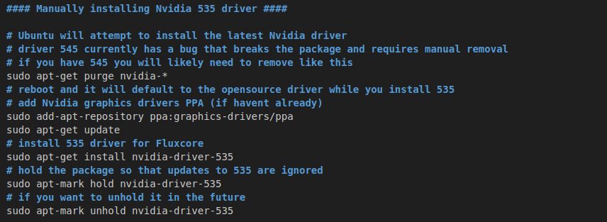

Welcome to Fluxcore and PoUW:
This guide will assist you in your installation and configuration of Fluxcore!
Notes before you start:
We are currently unable to enable GPU fan control in Ubuntu server. You might want to use Ubuntu desktop till a work around is created (for remotely controlled servers). A static IP is not required. You can put as many servers on the same public IP as you want. Remote servers should be on the same subnet as the workstation with the webserver in order to control them remotely
Let's dive right in!
Fluxcore is currently available for Linux (Ubuntu) and windows, with more options coming in the future.
Linux Installation:
Ubuntu 22.04 (desktop or server) and Nvidia driver 535 are recommended, however other options may also work. Fluxcore is capable of managing all of your systems from a GUI similar to the way Hive works (assuming you have used Hive OS). One key difference is how you access the GUI. In Fluxcore, you first install fluxcore on your workstation, and host your own private webserver page for the GUI. If you only have a single system, and it will only be used for mining when you are not using it otherwise, this is all you need to do. However if you have purpose built servers, you will want to install Fluxcore on your work station for the GUI, then add the remote servers in the GUI as additional machines and control them remotely, after installing Fluxcore on them as well
Configuring initial system with webserver GUI as a standalone or central control for other servers
Step 1: Configure system with Ubuntu 22.04 Desktop and Nvidia 535 driver. Ubuntu will attempt to install the latest Nvidia driver (currently 545). Additionally 545 has a bug that causes the package to break and often has to be manually removed before you can install 535. Ubuntu will continue to attempt to upgrade to the latest driver unless you lock it to the 535 version needed for Fluxcore. Use the below commands to remove 545 and install 535.
sudo apt-get purge nvidia-*
sudo apt-get update
sudo apt-get install nvidia-driver-535
sudo apt-mark hold nvidia-driver-535
Once you have Ubuntu installed, GPU's installed and Nvidia driver 535 installed, It's time to install Fluxcore.
Step 2: Open a terminal window, or your favorite IDE. Next run the bash script for the install
curl -o setup.sh https://download.fluxcore.ai/setup.sh ; bash setup.sh

Step 3: Install the prerequisites by entering "p" and pressing "Enter"

Step 4: Run the bash script again and this time enter "m" and press "Enter" it will prompt you for an IP to bind the webserver to. Accept the default, or use the system IP, and it will automatically open in your web browser to the IP/port of the web server and allow you GUI control over FLuxcore
Step 5: The system will do some initial checks, and will offer you the machine hash ID and the machine password. Save these values as you may need them later. Each install will have its own unique machine hash and passwrod values. You will be prompted to register an account. For right now, only the google log in works, but the Dev team is working hard to get the other options working as well. You will also be pompted to set up Two Factor Authentication. Any of the common 2FA applications should work for this. If 2FA applications are new to you, hop onto youtube and watch a quick video on how to set up Authy (or similar). Once you get logged in, you should now see the following screen. Go ahead and personalize the application, configure your public wallet address, and install the mining module.

(fluxcore will continue to run in your terminal window. Don't close it!)
Step 6: Set up proper "overclocks" for the GPU's before configuring fluxcore to mine or running any benchmarks. While OC settings are of great debate, what is most important is limiting power, and managing fan speeds so that the GPU's don't overheat. Flux core has the ability to manage these settings internally, however at the time of writing this, it was not yet working correctly, so I want to share how to manually change these settings in Ubuntu, as well as the config settings that need to be modified.
Before you can power limit and set fan speeds, a couple of config files need to be edited so you do not receive errors when changing the default settings. Once that is complete you can use Terminal to manually set power limits and fan speeds, (you can also go into the Nvidia X-server desktop application to set fan speed)

You can get to the Fluxcore OC settings by going to "Account" on the left side, then choosing "OC Profiles"

Step 7: Set up your mining profile, by clicking "mining" on the left side, then select the machine you want to configure under "my machines". Select coin, pool, wallet, (choose configure your saved wallets, then paste your deposit address into the field along with the name of the coin so it is obvious what this wallet is for in the future) lastly select the GPU's to assign to this mining profile and save the config. This is the screen where you configure a mining profile.

Add additional servers to the GUI and control remotely
Step 1: Configuring dedicated remote servers for control with your workstation. Typically you would install Ubuntu server and Nvidia driver 535 for your remote server but keep in mind we do not currently have a work around to control GPU fan speeds on Ubuntu server. We are working on a work around, but if you want to use it right away you might consider installing Ubuntu desktop. Next run the bash script for the install
curl -o setup.sh https://download.fluxcore.ai/setup.sh ; bash setup.sh
Step 2: Install the prerequisites by entering "p" and pressing "Enter"
Step 3: Run the bash script again and this time enter "d" and press "Enter" it will prompt you for an IP to bind the webserver to. You must use the server IP to be able to see it remotely. You can now paste that IP/port for the server into your workstation browser, and be able to finish configuration. The system will run a few checks and will provide you machine hash and machine password. It is very important to write these down as you will need them in the next step and the machine password cannot be retrieved after the fact.
Step 4: On your workstation you need to make a few changes before you can add the server to the GUI in your workstation as a second "machine". Use the follwing command to add the system to the hosts file
sudo apt-get purge nvidia-*
Next add the server IP as machine 1, with the next one you add as machine 2, etc.

Step 5: On your workstation GUI you can now add the additional machine for remote control and configuration. Go to the Machines option on the left side, then click "+ New Machine" on the top right. Your screen should look like this. At this pint you need to enter in the machine hash and machine password you were given for the server you are attaching.